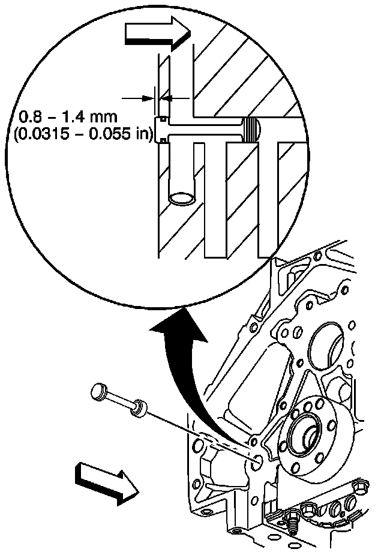
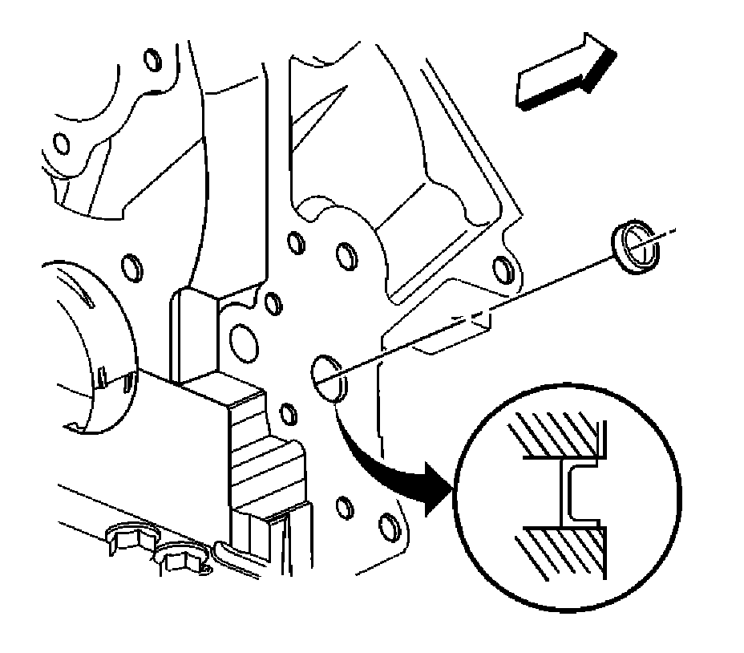

68. Engine Block Plug Installation
Engine Block Plug Installation
Important: Engine block plug, oil gallery, and coolant sealing washers may be used again if not bent, scored or otherwise damaged.
1. Apply a 3.175 mm (0.125 in) bead of sealant GM P/N 12346004 (Canadian P/N 10953480) to the engine block coolant heater sealing washer (115), if applicable. Refer to Sealers, Adhesives, and Lubricants.
Notice: Refer to Fastener Notice.
2. Install the engine block coolant heater (114) to the engine block.
Tighten the engine block coolant heater to 50 N.m (37 lb ft).
3. Apply a 3.175 mm (0.125 in) bead of sealant GM P/N 12346004 (Canadian P/N 10953480) to the engine block right rear coolant drain hole plug sealing washer.
4. Install the engine block right rear coolant drain hole plug.
Tighten the engine block right rear coolant drain hole plug to 60 N.m (44 lb ft).
5. Apply a 3.175 mm (0.125 in) bead of sealant GM P/N 12346004 (Canadian P/N 10953480) to the engine block left front oil gallery plug sealing washer (117).
6. Install the engine block left front oil gallery plug (116).
Tighten the engine block left front oil gallery plug to 60 N.m (44 lb ft).

7. Apply a 3.175 mm (0.125 in) bead of sealant GM P/N 12346004 (Canadian P/N 10953480) to the engine block left rear oil gallery plug sealing washer (113).
8. Install the engine block left rear oil gallery plug (112).
Tighten the engine block left rear oil gallery plug to 60 N.m (44 lb ft).

9. Inspect the engine block rear oil gallery plug and O-ring seal. If the O-ring seal on the plug is not cut or damaged, the rear oil gallery plug may be used again.
10. Lubricate the O-ring seal with clean engine oil.
11. Install the O-ring seal onto the plug.
12. Install the engine block rear oil gallery plug into the oil gallery bore. A properly installed block plug will protrude 0.8-1.4 mm (0.0315-0.055 in) beyond the rear face of the block.
13. Apply threadlock GM P/N 12345382 (Canadian P/N 10953489) to the sides of the NEW front oil gallery plug (101).

14. Install a NEW engine block front oil gallery plug. Install the plug into the oil gallery bore 2.2-2.8 mm (0.0086-0.011 in) below flush.
15. Install the left side knock sensor (718) and bolt (739).
Tighten the bolt to 20 N.m (15 lb ft).

16. Install the right side knock sensor (718) and bolt (739).
Tighten the bolt to 20 N.m (15 lb ft).